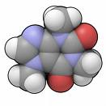
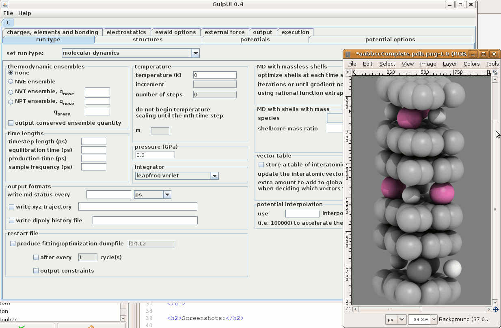

AtomSim
AtomSim is a Web-deployed interface to forcefield-based atom dynamics
programs. Currently it is an applet / java web start module and supports the
well-known General Lattice Utility
Program, or GULP. In the future it will become a rich internet
application and will support additional engines such as MMTK. It can be accessed by
clicking the launch button below. Java 1.5 or higher must be installed on
your machine.
Features:
- atomic viewer and table structural editor
- job launcher and remote job submission handler
- several panels for optimization, md, phonons, data fitting, forcefield
creation, structure manipulation, electrostatics and ewald summation,
monte carlo simulation, structure prediction, reaction transition point
identification, and more.
- integration with computational cluster, results analysis, and neutron
scattering experimental validation in DANSE.
- external database of forcefields
- shell models and QM/MM integration capable
Screenshots:

Md simulation of potassium intercalated graphite
Questions or Support:
Contact j. keith.